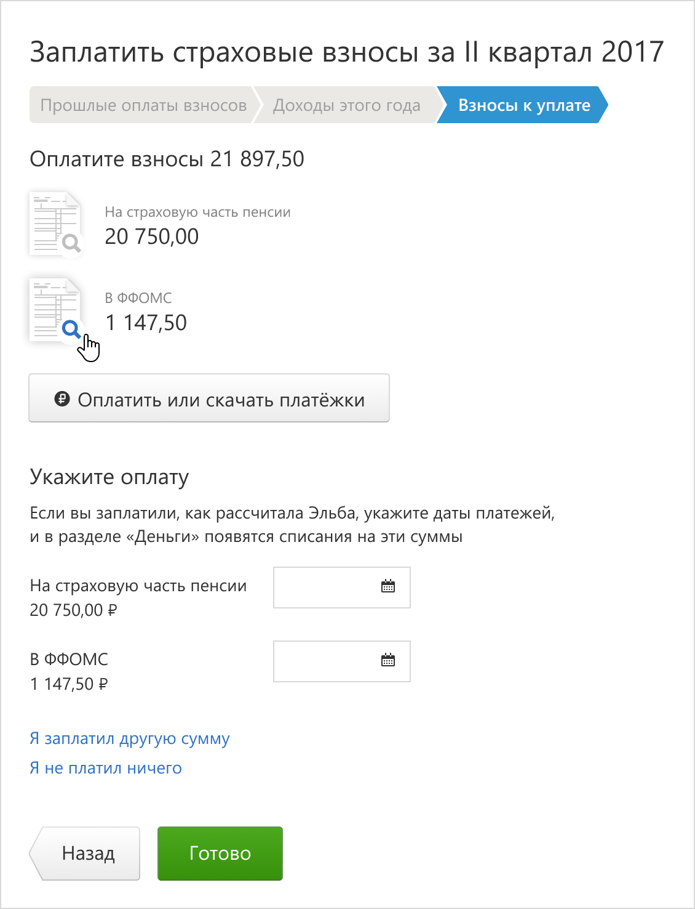
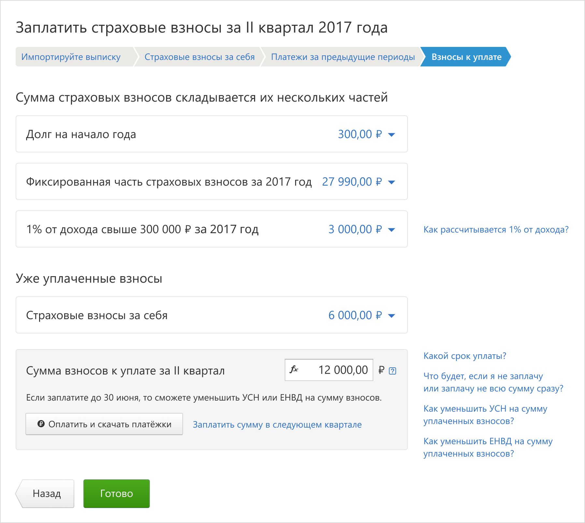
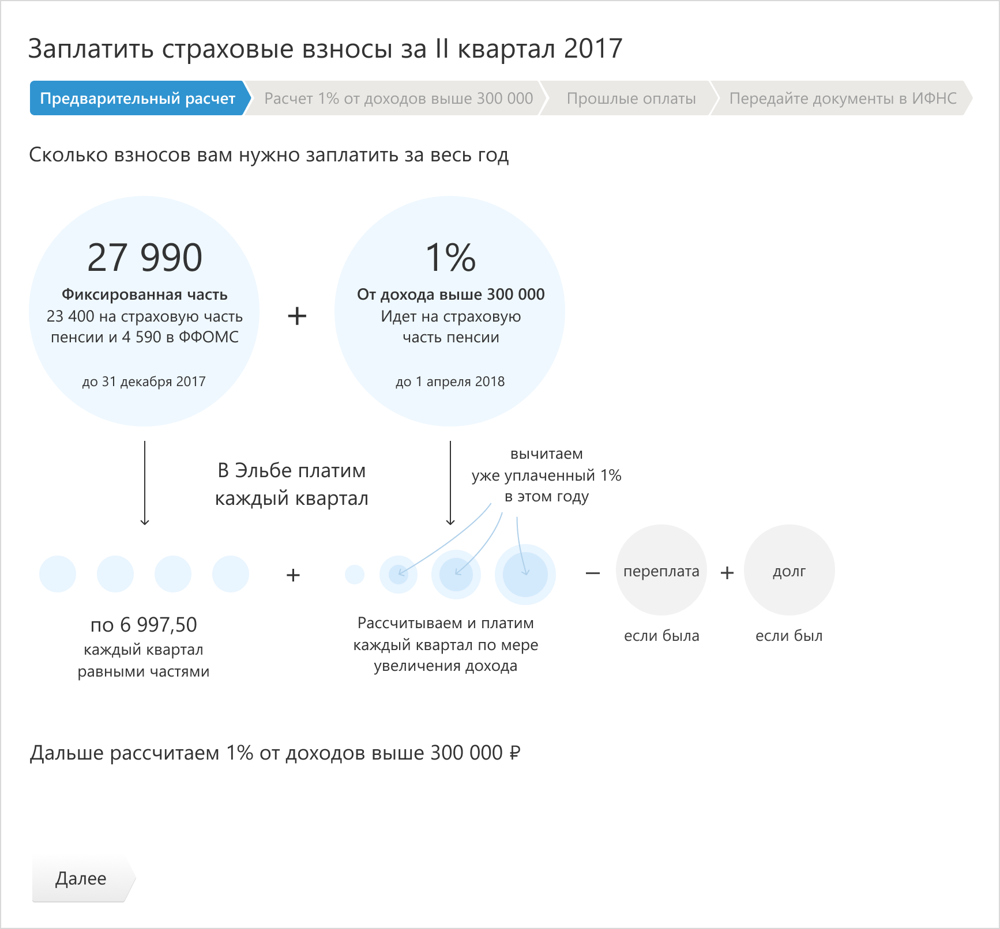
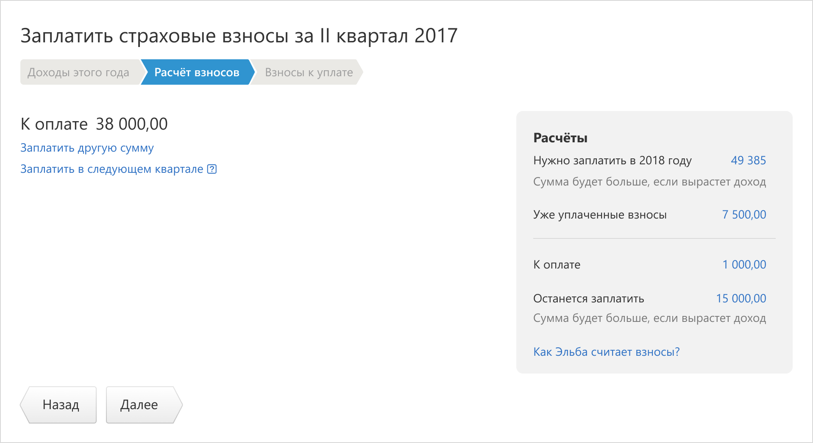
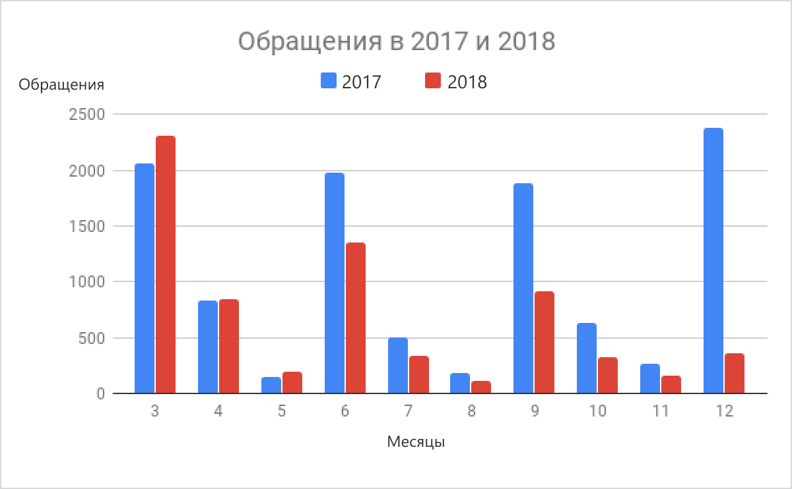
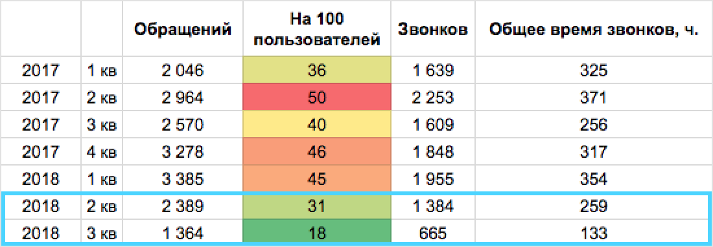

Взносы ИП за себя
Эльба — интернет бухгалтерия для ИП и ООО. Пользователи — предприниматели, директора.
Задача
Пользователи в Эльбе в определенные сроки выполняют задачи по уплате налогов, взносов. Это обусловлено законодательством РФ. Здесь я расскажу про одну из таких задач — «Взносы ИП за себя». Она была очень сложной для пользователей и, как следствие, для нашей техподдержки.
В этой задаче было несколько проблем, из-за которых пользователи путались, платили неверные суммы и имели долги перед государством. Я расскажу про две проблемы и про их решения.
Проблема 1. Факт оплаты фиксировался поздно
Все прототипы с данными за 2017 год. Позже поменялись суммы и дата уплаты, но суть осталась та же.
В Эльбе все задачи по уплате налогов и взносов устроены примерно одинаково:
- Пользователь проходит несколько шагов мастера с расчетами.
- На итоговом экране сервис предлагает заплатить рассчитанные налог или взносы.
- Задача никак не требует подтвердить факт уплаты, не интересуется, а заплатил ли пользователь — он может ее просто завершить. С этим связана первая проблема.
Вопрос про прошлую задачу
Из-за того, что текущая задача не спрашивает про факт оплаты и не помогает следить за этим, в Эльбе есть сложный момент. Когда наступает время для следующей задачи, сервис не знает, заплатил ли пользователь взносы в прошлой задаче. Поэтому сервис спрашивает о прошлых платежах до того, как показывает расчеты по новой задаче:
Между собой мы называем этот экран «промисами».
Для пользователей вопрос про прошлую задачу непонятен. У них есть ожидание, что на этом экране должны быть расчеты по текущей задаче, а сервис спрашивает что-то про прошлые уплаты.
Подставленные суммы
В столбце «Уплачено» сразу подставлены те суммы, которые Эльба предлагала заплатить в прошлой задаче — это ожидания сервиса по оплате за предыдущий квартал, а не уже свершившиеся оплаты. Ранее проектировщик с командой думали, что так помогают пользователю не вспоминать те суммы, которые он должен был заплатить. По факту же Эльба не знает, сколько платил пользователь, да и платил ли вообще. Выглядит все так, будто эти суммы уже оплачены, Эльба про них знает и поэтому показывает в полях. Даже колонка называется «Уплачено».
Пользователи воспринимали весь этот экран неверно. А если кто-то и понимал, о чем речь, им было очень сложно вспомнить, что они платили в прошлом квартале — сервис в этом не помогал. Из-за непонимания этого экрана пользователи хотели миновать его поскорее: вводили рандомные даты в поля, тем самым подтверждая факт оплаты, которой могло и не быть. От этого у них были неверные расчеты и ошибки в оплате взносов — налоговая сообщала им о долге. Пользователи недоумевали и звонили в техподдержку.
Ты не пройдешь!
Задача не пускала пользователя на следующий шаг, пока он не указал даты платежей. Часть пользователей обращалась в техподдержку с вопросом, что делать, если не платил. Другая часть выбирала придуманные даты, лишь бы задача пустила дальше.
Мало кто читал текст после заголовка о том, что нужно удалить строки, если ты не платил эти суммы:
Удалить строку
Удаление строк из списка сделано плохо. Нужно навести курсор на строку, тогда справа появляется крестик удаления.

Да, много где крестиком удаляются строки в таблицах. Но есть нюанс. Эти данные, строки пользователь не добавлял вручную, они сразу были на странице. А обычно пользователи удаляют только то, что добавили сами. И никогда не удаляют расчеты сервиса таким вот образом. Да и не все видели крестик, который появляется лишь по наведению. Его и не пытались искать. Его существование было довольно неожиданно для пользователя.
Пользователи полностью терялись на этом шаге.
Решение 1 — без промисов
Для меня решение про промисы было очевидным. Этот экран надо убирать. О том, что взносы надо заплатить, должна заботиться текущая задача по оплате, а не следующая. В этом ведь и есть суть задачки — помочь пользователю выполнить определенные действия в срок. Задача не должна завершаться легко и просто без оплаты. Она должна ждать появления списания по взносам в сервисе (платежку) — так Эльба будет уверена, что оплата и правда была. Пользователь же будет видеть, когда задача «Заплатить взносы» еще актуальна и недоделана, если еще нет оплаты.
Такое решение команда приняла не сразу. Были предложения улучшить сам экран промисов, сделать его понятней и удобней. Но проблема этого экрана не только в понятности. Он спрашивает про прошлую задачу, пользователь уже не в контексте, потерял свои бумажные платежки, если они и были квартал назад. Спрашивать об оплатах лучше вовремя, сразу после них, а не через квартал, когда контекст уже не потерян.
Последний шаг задачи
Решение — спрашивать об оплате на последнем шаге задачи. В Эльбе пользователь может заплатить взносы разными способами: через интернет-банк, через Яндекс.Деньги или наличными. Я решила, что последний шаг задачи должен быть умным. Он немного меняется в зависимости от того, как пользователь решил заплатить взносы.
Оплата через интернет-банк
Если пользователь скачивал в Эльбе файл для оплаты через интернет-банк, мы можем ни о чем дополнительно не спрашивать его и разрешить завершать задачу. Списания по взносам появится в Эльбе, когда пользователь загрузит выписку из банка, или когда они придут автоматом через интегрированный с Эльбой расчетный счет — таковы сценарии у пользователей, которые пользуются интернет-банками. Следующая задача по взносам рассчитается правильно автоматически.
Оплата наличными или через Яндекс.Деньги
Если пользователь выбирал оплату наличными или через Яндекс.Деньги, то списание не появится в Эльбе, пока пользователь его не добавит. Для этого случая на последнем шаге задачи мы попросим пользователя указать дату оплаты. Этого хватит, чтобы создать списание. И это будет учтено в следующей задаче по взносам.
Пока пользователь не укажет оплату, мы не даем завершать задачу.
Непонятная оплата
Если пользователь на экране выбора способа оплаты нажимал разные ссылки, мы не знаем, как он платил, а значит не знаем, появится ли списание само с банковской выпиской, или надо просить пользователя добавить его. Поэтому на последнем шаге задачи мы спрашиваем пользователя, как он платил:
Последний экран задачки ловит пользователей в нужный момент, когда информация об оплате у них свежа. А для большинства нормальных ребят, которые платят через банк, задача не спросит ничего дополнительно и учтет все сама. Кстати, таких пользователей большинство.
Проблема 2. Непонятный расчет
С одной стороны все рассчитанные суммы можно развернуть и посмотреть, из чего они складываются. С другой стороны — на финальном экране задачи пользователь видит платежки с совершенно другими суммами для оплаты. Почему так? Потому что каждая из сумм дробится на части и платится в разные фонды — пенсионный и ФФОМС.
Как по закону
- За 2017 год пользователь должен заплатить 27 990 ₽. Причем из них 23 400 ₽ на страховую часть пенсии и 4 590 ₽ в ФФОМС. То есть две платежки в разные органы. Эти суммы нужно заплатить до 31 декабря 2017 года.
- Если у пользователя доход выше 300 000 ₽ в год, то ему нужно заплатить еще 1% с суммы, которая превышает эти 300 000 ₽. Вся эта сумма идет на страховую часть пенсии, то есть в пенсионный фонд. Ее нужно заплатить до 1 апреля 2018 года, если речь про взносы за 2017 год.
Зачем же Эльба просит пользователя платить поквартально?
Уменьшение УСН
Страховые взносы достаточно платить раз в год. Но пользователи платят еще налог УСН, который они могут уменьшать на величину уже уплаченных страховых взносов. Налог УСН платят раз в квартал. Поэтому для пользователей лучше и взносы платить раз в квартал, чтобы уменьшать налог УСН. Да, можно так не делать и в конце года потребовать возврат излишне уплаченного налога УСН, но зачем, если можно сразу каждый квартал платить меньше. Что Эльба и советует.
И тут вступает в дело логика нашей задачки.
Каждый квартал мы просим пользователя платить четверть от фиксированного куска в 27 990 ₽ и 1%, если он уже набежал. 27 990 ₽ состоит из 2 частей в разные органы — 23 400 ₽ и 4 590 ₽. От них берем по четверти и распихиваем по двум платежкам — в пенсионный фонд и ФФОМС. В первую платежку для пенсионного фонда складываем еще набежавший 1%.
Так мы делаем в каждом квартале: берем четверть от фиксированной части, рассчитываем набежавший 1%, распихиваем все по двум платежкам.
Много вопросиков
Пользователи, которые знакомы с законодательством, начинают возмущаться или просто задавать вопросы на тему того, почему мы заставляем их платить 1% весь год, ведь его нужно платить только к 1 апреля. Тут нечего ответить, кроме как: «Вам самим будет так удобнее, хуже будет, если 1% будет копиться весь год и к 1 апреля набежит немалая сумма».
Расчеты и логика работы задачки непростые. Часть пользователей, которая хочет во всем разобраться, видит какие-то цифры, не понимает, откуда они, почему их надо платить именно сейчас, почему в платежках не те суммы, что в расчетах. Другая часть пользователей целиком доверяет Эльбе и вообще не хочет вникать в расчеты. Но раз Эльба их показывает, пользователи пытаются вникнуть, правда у них не выходит. И третья часть пользователей задается вопросом: а могу ли я заплатить другую сумму.
Решение 2 — без расчетов
Сначала я предприняла несколько графических попыток рассказать пользователям, как считает Эльба и почему у нас такие цифры. Пробовала рассказать инфографикой:
Пробовала увязать прошлые оплаты и текущие расчеты:
Пробовала показать, как эти суммы превращаются в две платежки:
Но все это казалось очень сложным и запутанным.
Внезапно пришло понимание, что пользователю все эти расчеты вообще не нужны. Пользователям нравятся задачки с шагами, где только Далее → Далее → Готово. Большинство пользователей Эльбы доверяет расчетам и не хотят сложноты — все запутанное в Эльбе спрятано, в этом ее ценность. Расчеты же вызывают желание проверять их или интересоваться тем, как все посчиталось. А нет цифр — и нет проблем.
Так что мы с командой решили, что в квартальных задачах мы не будем показывать подробные расчеты, только сумму к уплате. Расчет покажем лишь в одной, годовой задачке, когда действительно важно заплатить правильные суммы:
Да и то, расчеты покажем справочно, сбоку — не надо на них смотреть и пытаться проверять. Они есть для тех, кто реально хочет что-то узнать и понять. Для большинства пользователей такой цели нет. Когда расчеты были в основной рабочей области, они будто заставляли раскрывать и проверять их, а тут уже и до разных вопросов недалеко. И до звонка в техподдержку. А так — это справочная информация, не особо напрягает.
Цифры на плашке можно разворачивать и посмотреть, из чего складываются:
Что сделано и планы
В задаче согласно прототипам произошли большие изменения. Чтобы затащить все это в разработку, мы разбили ее на части по нескольким причинам:
- Всегда есть риск огрести, если потрогать задачу во многих местах.
- Задача затрагивает 90% пользователей.
- Задачу меняли не в первый раз, это был негативный, улучшений не наступало, этого не хотелось снова. Что-то менять было просто страшно. Стыдно перед техподержкой и пользователями.
- В команде было много несогласных с новым механизмом работы задачи. Не все верили, что в промисах есть проблема.
Поэтому мы начали с небольших изменений.
Промисы лишь причесали
Промисы пока трогать не стали, немного прибрались в них, чтобы их хоть маленько поняли. Переписали текст под заголовком, ссылку удаления строки показываем сразу.
Это костыль и временное решение. Мы это понимаем и будем дорабатывать задачу дальше.
Техподдержке стало чуть легче
Вроде бы два небольших изменения, но техподдержка уже меньше страдала от вопросов пользователей по этой задаче. То есть мы двигаемся в правильном направлении.
Вот столбики количества обращений для 2017 и 2018 года, сгруппированные по месяцам. Задачу зарелизили 5 июня 2018. Смотреть нужно на 6 и 9 столбик — взносы платят в июне и в сентябре. Видно, что красный столбик становится ниже синего:
А из этой картинки видно, что сократилось относительное число инцидентов на каждые 100 пользователей для задачек по взносам за 2 и 3 квартал:
Дальше по плану полное избавление от экрана промисов. После них будем убирать расчеты и оставлять их краткий вид в годовой задаче.